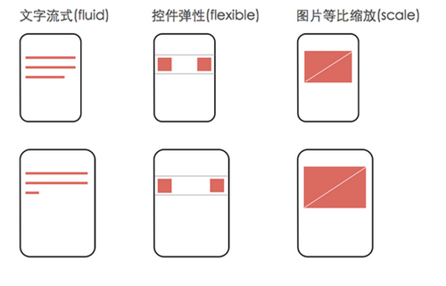

在桌面浏览器中css的1个像素往往都是对应着电脑屏幕的1个物理像素，常见的1366*768，这可能会造成我们的一个错觉，那就是css中的像素就是设备的物理像素
但css中的像素只是一个抽象的单位，在不同的设备或不同的环境中，css中的1px所代表的设备物理像素是不同的
移动端设备屏幕尺寸多，碎片化严重
safari的工程师在发明viewport，width的取值除了像320或960这样的数字，也可以是关键字device-width表示采用设备宽度。
<meta name="viewport" content="width=device-width,initial-scale=1.0,minimum-scale=1.0,maximum-scale=1.0,user-scalable=no" />
content属性值 :
width:可视区域的宽度，值可为数字或关键词device-width; height:同width
intial-scale:页面首次被显示是可视区域的缩放级别，取值1.0则页面按实际尺寸显示，无任何缩放
maximum-scale=1.0, minimum-scale=1.0;可视区域的缩放级别
maximum-scale用户可将页面放大的程序，1.0将禁止用户放大到实际尺寸之上。
user-scalable:是否可对页面进行缩放，no 禁止缩放
一份效果图无法百分百还原于不同尺寸的移动设备，但可以利用现有技术近似接近
不同分辨率的手机，不同物理尺寸的终端，为了保持良好的视觉体验和用户体验，我们不得不根据逻辑像素为每一个尺寸写一份 Media 代码，那么对应的，设计师也需要设计多套版式供前端使用，这给设计师、前端和测试带来了无尽的麻烦。为此，我们通过前端技术重塑屏幕，重新定义像素尺寸，使用流式布局，通过百分比来响应不同的终端尺寸。
京东与新浪大多为弹性布局：关键元素高宽和位置都不变，容器元素做伸缩变换。

网易的动态计算fontSize
淘宝的既改变viewport又fontSize
链接Tips: 从网易与淘宝的font-size思考前端设计稿与工作流
设计效果图的做法(点dpi即对应逻辑像素，仅供参考)
移动端尤其设备尺寸不同没有统一固定标准，界面比较流行的做法是按照iPhone的尺寸来设计。
如:
2014年是iPhone5/5s的屏幕。倍率为2，逻辑像素320×568(640*1136)
2015年iPhone6发布后，暂时。倍率为2，逻辑像素375×667(750*1334)
这样的做法比较实在，倍率2的屏幕无论在iOS还是Android方面都是主流，而且又是2倍屏幕中逻辑像素最小的。
所以图片的尺寸可以保持在较小的水平，页面加载速度快。当然，缺点就是在倍率3的设备上看，图片不是特别清晰。
如果追求图片质量，愿意牺牲加载速度，那么可以按照最大的屏幕来设计。也就是iPhone 6 plus的尺寸，倍率3，逻辑像素414×736。
设计师按照设备像素(device pixel)为单位制作设计稿。
前端工程师，参照相关的设备像素比(device pixel ratio)，进行换算以及编码
单位决定了我们的思考方式